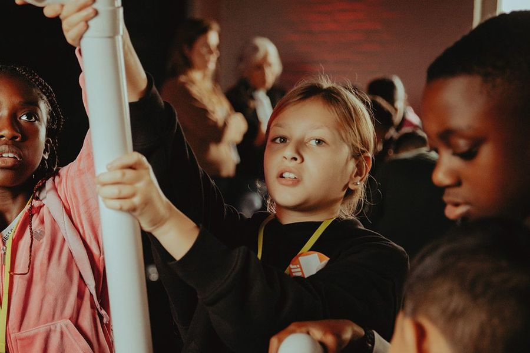

Onze missie
Iedereen groeit met JINC
Elk kind, elke jongere heeft talent. Maar wie opgroeit in een omgeving met sociaaleconomische uitdagingen, heeft veel minder kans zijn potentieel waar te maken.

Daarom helpt JINC hen, samen met het onderwijs en het bedrijfsleven, op weg naar een goede start op de arbeidsmarkt. Via de JINC-leerlijn maken kinderen en jongeren op de basisschool tot en met de mbo-instellingen onder andere kennis met allerlei beroepen, ontdekken ze welk werk bij hun talenten past en leren ze solliciteren.
“Jongeren uit een omgeving met sociaaleconomische uitdagingen hebben nog steeds veel minder makkelijk toegang tot goed werk, terwijl de arbeidsmarkt staat te springen om talent. Wat mij zo aanspreekt is dat JINC die kloof overbrugt door te doen! Ik heb er veel plezier in om samen met medewerkers, vrijwilligers en partners te zorgen dat alle jongeren, ongeacht hun achtergrond, een kans krijgen op een goede start op de arbeidsmarkt.”
JINC in cijfers
- 9.208 leerlingen - deden in 2025 mee aan een project van JINC
- 167 partners - maakten vorig jaar als partner het werk van JINC mogelijk
- 92 scholen - bereidden hun leerlingen samen met JINC voor op de arbeidsmarkt
- 1.147 vrijwilligers - hielpen jongeren hun talenten ontdekken
De expertise en financiële steun van partners uit het onderwijs en bedrijfsleven en de gemeenten en fondsen zijn onmisbaar voor de projecten van JINC. De partners krijgen er iets waardevols voor terug: de kans om een verschil te maken in het leven van de leerlingen én de kans om te investeren in hun bedrijf – een strategische, langetermijninvestering in de reputatie en toekomstige groeimogelijkheden van het bedrijf. Ze versterken hun binding met de maatschappij, laten werknemers uit hun bubbel stappen en bieden hen een inspirerende ervaring.
“Iedereen groeit met JINC”.
Ons werk in beeld
-

Projecten
Lees meer over de projecten -

Doe mee
Lees meer over meedoen